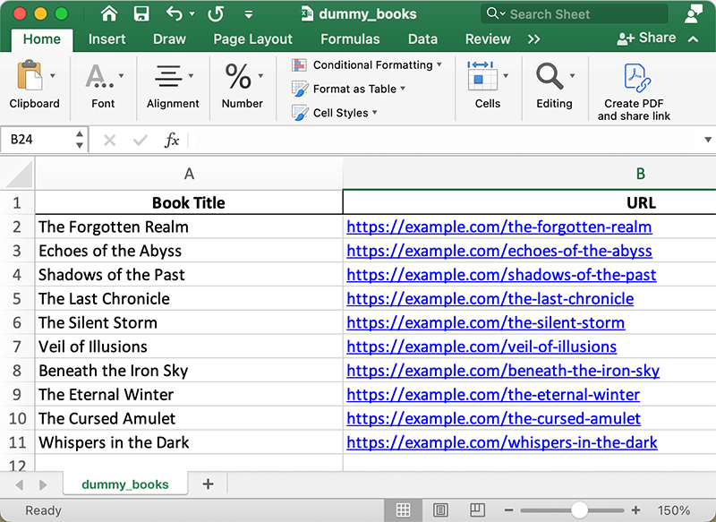
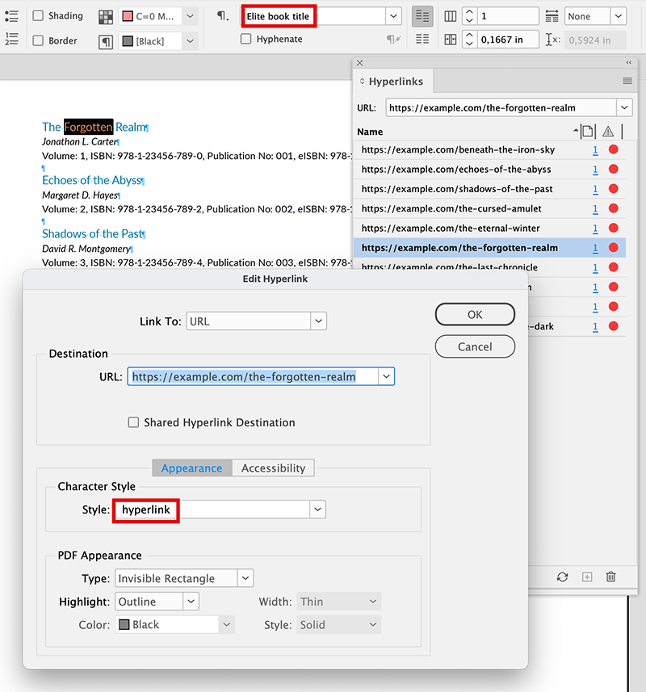
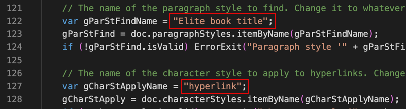
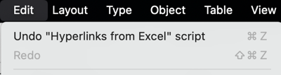
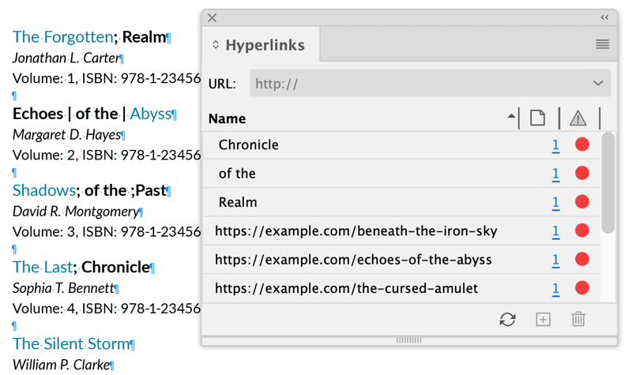

Hyperlinks from Excel
This script is for Mac only (but a version for Windows is also possible). Written — on request from a user at the Adobe InDesign forum — and tested in InDesign 2024 (version 19.5) & Excel version 16.56 by Kasyan. Based on my Get data directly from Excel function, which has been significantly improved while writing the script.
At the start, the script asks the user to choose an Excel file in which
- column A corresponds to the text to be found
- column B to the URL address for the hyperlink.

Then it reads data from Excel and makes hyperlinks.

The script searches the paragraph style "Elite book title" and applies the character style "hyperlink" to hyperlinks. Feel free to change them to whatever you need in these lines (or outcomment / remove them):

You can Undo/Redo the whole script

This is a basic version of the script tested against a simple document. With real (large) files, problems may occur. I recommend you to make a 'clean' template and start every new document — e.g. a new catalogue issue — from it. If you'd work on the same file, there may appear 'ghost hyperlink elements' preventing the script from working properly. This often happens when you copy-paste / import text from other files.
Also, with very large Excel files — a few dozen thousand records — the script may stop working. I guess because the arguments string used to pass data from Excel to InDesign has a limitation. It depends on the number of rows and columns, and how much data they contain. If such a situation happens, using CSV file instead of XLSL is the only way to go.
Note: the script uses semicolon ( ; ) and pipe ( | ) characters as delimiters so if you use them in text, it will prevent the script from working as expected:

In this case, change them to some exotic characters that will never appear in text.
Click here to download the script, and here are the test files shown on the screenshots above.
If you found this script useful and want me to develop it further, consider supporting me by donating via PayPal directly to my e-mail: askoldich [at] yahoo [dot] com (Due to PayPal’s restrictions for Ukraine, I can’t have a Donate button on my site.)